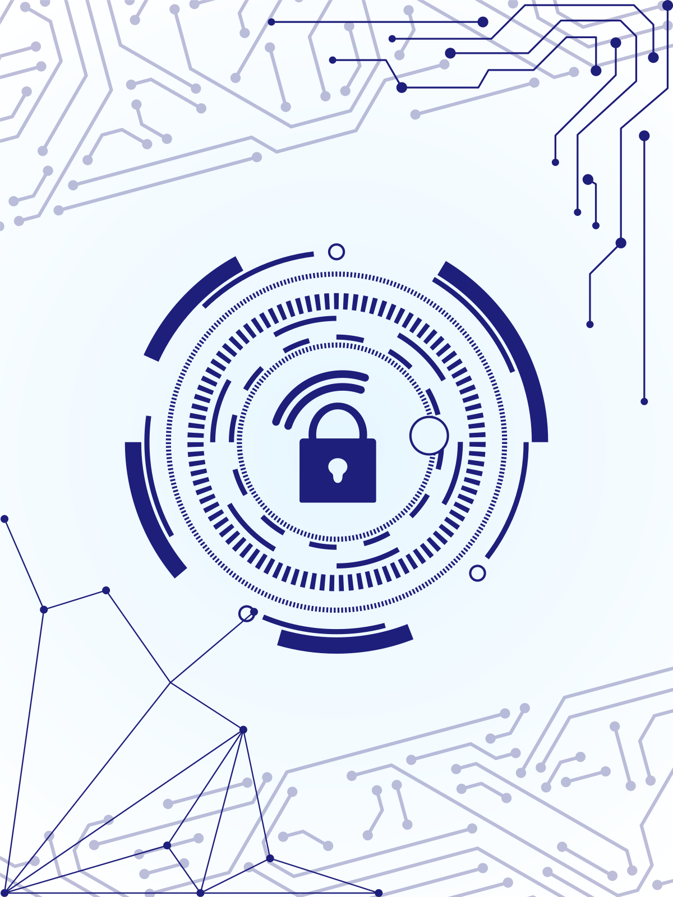
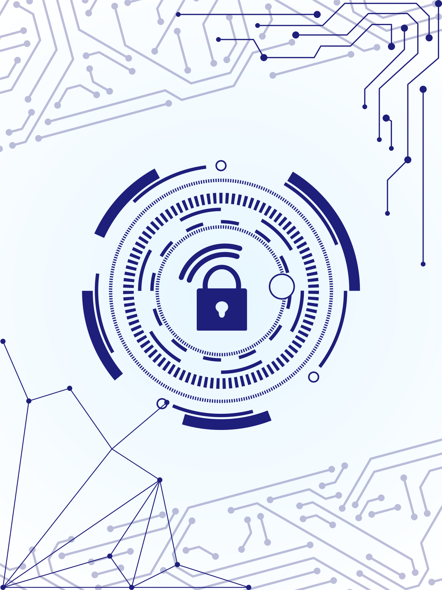

Este site tem como objetivo informar e conscientizar os usuários sobre a importância da cibersegurança no mundo digital. Aqui, você encontrará informações claras e acessíveis sobre o que é cibersegurança, como ela protege nossas informações e sua relevância no dia a dia. Além disso, abordamos os ataques cibernéticos mais comuns, explicando suas características e os riscos que representam para pessoas e organizações. Para complementar, oferecemos dicas práticas de como se proteger, ajudando você a adotar hábitos mais seguros e reduzir os riscos online. Nosso propósito é tornar a internet um lugar mais seguro para todos!
ATAQUES MAIS COMUNS AO USUÁRIO
01.
Ransomware
O ransomware, de maneira mais comum, é encontrado em links contidos em e-mails. Trata-se de um tipo de código malicioso que torna os dados de um dispositivo inacessíveis ao usuário.
Mais+
02.
Cavalo de Troia
Os Cavalos de Troia representam uma categoria de software malicioso que se infiltra, frequentemente, por meio de e-mails de phishing. O principal objetivo desse tipo de malware é roubar dados confidenciais e compartilhá-los com hackers.
Mais+
03.
Spyware
O spyware é um tipo de software malicioso frequentemente encontrado em sites comprometidos. Seu objetivo principal é monitorar as atividades de um dispositivo e roubar informações pessoais sem o conhecimento do usuário.
Mais+
COMO SE PROTEGER
Diante das diversas ameaças presentes no mundo tecnológico onde estamos frequentemente vulneráveis a ataques em nossos dispositivos ou redes, devemos procurar saber como e com o que podemos nos prevenir. Existem várias formas de se proteger contra os ataques cibernéticos, sendo elas:
- Software Antivírus são ferramentas essenciais e amplamente utilizadas para garantir a segurança de dispositivos contra ameaças cibernéticas. Por exemplo, empresas frequentemente utilizam software antivírus para proteger informações confidenciais e assegurar a integridade de suas operações. Um exemplo comum de antivírus amplamente utilizado no dia a dia é o Windows Defender, integrado ao sistema operacional Windows, que oferece proteção em tempo real contra malware e outras ameaças. Além disso, muitos softwares antivírus modernos empregam inteligência artificial para identificar e mitigar novos tipos de ataques, desempenhando um papel crucial na proteção de dados importantes e pessoais, bloqueando acessos indesejados e mantendo os dispositivos seguros.
- Firewalls são igualmente comuns e são frequentemente utilizados para delimitar as fronteiras de uma rede privada; por exemplo, redes de escritórios costumam empregar firewalls para proteger suas infraestruturas contra ameaças online. Um firewall amplamente utilizado no cotidiano é o do sistema operacional Linux, que utiliza um modelo de código aberto, sendo facilmente modificado para diversas situações, desempenhando a função de proteger a máquina de ataques indesejados, bloqueando a entrada de conteúdos que o usuário não deseja receber.
- Senhas fortes são a base para a segurança online e desempenham um papel crucial na proteção de suas contas e dados. Para criar uma senha eficaz, utilize uma combinação de letras maiúsculas e minúsculas, números e caracteres especiais, evitando palavras óbvias ou informações pessoais, como datas de nascimento. Uma prática recomendada é o uso de frases longas e únicas, que são mais difíceis de serem quebradas. É igualmente importante não reutilizar senhas em diferentes plataformas, pois isso pode facilitar ataques em cadeia caso uma delas seja comprometida. Ferramentas como gerenciadores de senhas podem ajudar a criar, armazenar e organizar suas credenciais de forma segura, além de facilitar a troca periódica de senhas, outra prática essencial para manter a proteção.
Isto é o intuito fundamental de um software de proteção, manter a segurança dos dados do usuário. Portanto, é fundamental que adotemos medidas proativas para proteger nossos dispositivos e informações. Isso inclui a instalação de softwares antivírus, a atualização regular dos sistemas operacionais e aplicativos, além da educação contínua sobre as melhores práticas de segurança digital. Estar ciente dos riscos e agir preventivamente pode fazer uma diferença substancial na proteção contra essas ameaças